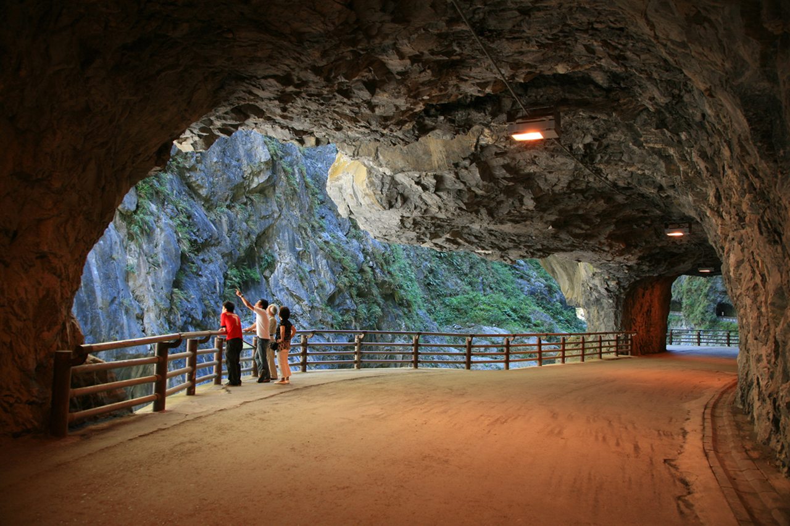

位於東亞的民主海島國家，面積約3.6萬平方公里，人口約2,350萬。以發達的高科技半導體產業、豐富多樣的地形氣候、享譽國際的夜市小吃，以及熱情友善的人情味聞名全球。
台北 101 是台灣最具指標性的地標，建築仿效「青竹」節節高升的意象，曾為世界第一高樓。遊客可搭乘超高速電梯直達 89 樓觀景台，俯瞰台北全景。
位於台灣地理中心，因北半部形如日輪，南半部形如月鉤而得名。湖光山色如詩如畫，旅客可搭船遊湖、騎乘環潭自行車道，或漫步於伊達邵與水社商圈，體驗濃厚的邵族原住民文化。
以日出、雲海、晚霞、森林鐵道與巨木合稱為「阿里山五奇」。除了豐富的生態與神木群，搭乘阿里山小火車穿梭於高山森林間，是極具代表性的經典體驗。
以壯麗的大理岩峽谷景觀聞名全球。立霧溪經年累月切割出垂直陡峭的峽谷與斷崖，區內設有多條親民步道（如燕子口、砂卡礑），沿途可欣賞鬼斧神工的自然地貌。

© 2026 南投高中電子商務科 | 311003吳奕嫺